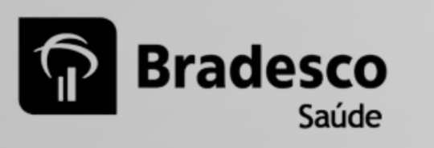

Ciência e tecnologia.
Cuidado que transforma.
Tratamentos para a face e o sorriso, com atenção à saúde, à função e à naturalidade de cada paciente.


Dr. André Serra
Odontologia especializada, com olhar individualizado.
Graduado pela Universidade Federal da Bahia, especialista em Cirurgia e Traumatologia Bucomaxilofacial pela UFBA em convênio com as Obras Sociais Irmã Dulce. É mestre em Odontologia e Saúde e atua também na docência universitária.
- Especialização em Cirurgia Bucomaxilofacial
- Pós-graduação em Implantodontia
- Pós-graduação em Harmonização Orofacial
- Mestrado em Odontologia e Saúde – UFBA
Especialidades para
cada necessidade.
Conheça as possibilidades de tratamento e entenda como a avaliação especializada pode ajudar.
Cirurgia ortognática
Correção das relações entre os ossos da face e a mordida, com planejamento individualizado e acompanhamento interdisciplinar.
Conhecer tratamento 02Sisos e cirurgia oral
Avaliação de dentes inclusos, extrações e outras intervenções orais com atenção ao conforto e à recuperação.
Conhecer tratamento 03Sorriso gengival
A exposição gengival pode ter diferentes origens. O diagnóstico orienta a escolha de um tratamento adequado.
Conhecer tratamento 04Implantes faciais
Próteses personalizadas podem integrar o planejamento de alterações de projeção, proporção e simetria facial.
Conhecer tratamento 05Implantes dentários
Alternativas para substituir dentes ausentes e recuperar funções bucais, com planejamento conforme a condição óssea e clínica.
Conhecer tratamento 06ATM e DTM
Investigação de alterações nas articulações temporomandibulares e nas estruturas envolvidas na mastigação.
Conhecer tratamento 07Outros tratamentos
Atuação em situações que exigem avaliação cirúrgica especializada da região bucomaxilofacial.
Conhecer tratamento 08Harmonização facial
Procedimentos de harmonização planejados considerando a anatomia e os objetivos de cada paciente.
Conhecer tratamentoPlanos de saúde
Consulte a equipe para confirmar cobertura, autorização e disponibilidade do procedimento.



Clínica Maxi Sorriso
Odontologia especializada em Salvador.
Atendimento em consultório e, conforme a indicação clínica, em ambiente hospitalar. Uma abordagem interdisciplinar que considera as necessidades de cada paciente.
Como chegar
O primeiro passo é uma conversa.
Agende uma avaliação individualizada para esclarecer suas dúvidas e conhecer as possibilidades de tratamento.
Agendar consultaClínica Maxi Sorriso
Odontologia Especializada
Cidadela Center III · Sala 406Rua Senador Theotônio Vilela, 225
Parque Bela Vista (Av. ACM), Salvador – BA
CEP 41100-140(71) 3351-9720(71) 98378-1010 · WhatsAppTraçar rota